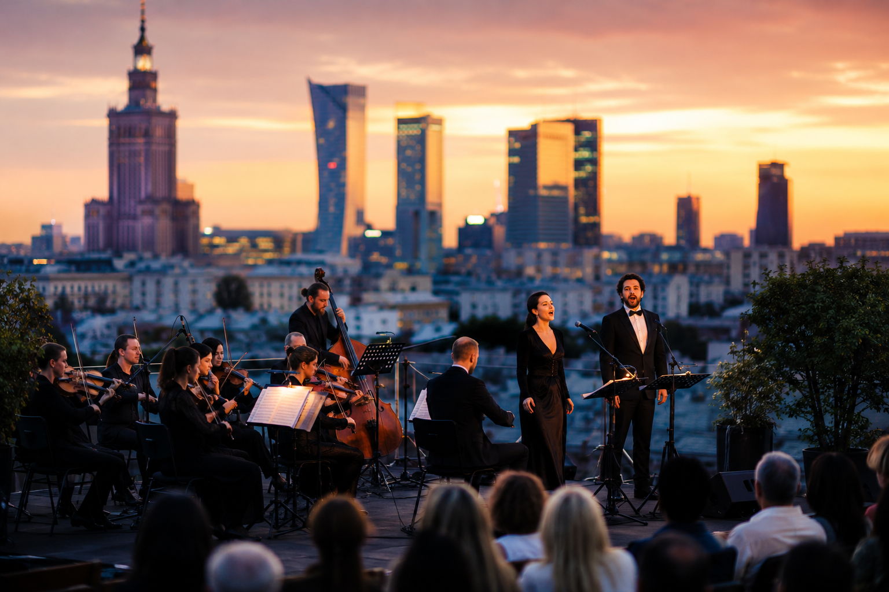
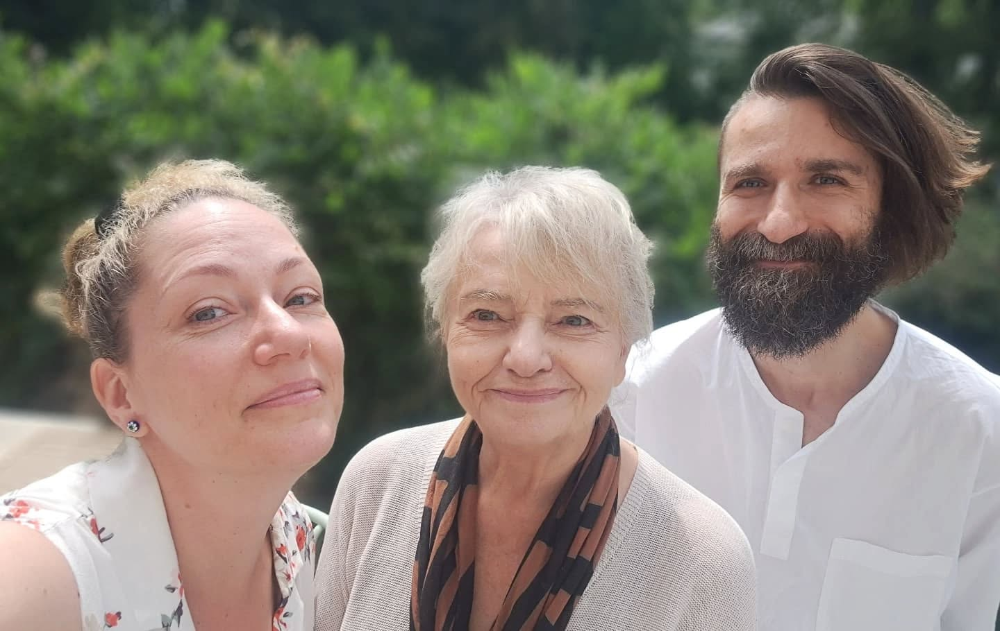

Fundacja Praktyk Twórczych
ROBIMY!

Muzyka. Teatr. Edukacja.
PROJEKTY
AKTUALNOŚCI
O FUNDACJI
Robimy słuchowiska, spektakle, koncerty i projekty, które nie mają gotowych odpowiedzi. Mają za to pytania. I przestrzeń, żeby je zadawać razem.
Pobierz statut fundacji (PDF) ↓
WESPRZYJ
KONTAKT
KRS 0001186330 · NIP 5214127166 · REGON 542324154
Fundacja, zarejestrowana 31 lipca 2025 r.
Organ nadzoru: Minister Kultury i Dziedzictwa Narodowego, Prezydent m.st. Warszawy
Fundacja, zarejestrowana 31 lipca 2025 r.
Organ nadzoru: Minister Kultury i Dziedzictwa Narodowego, Prezydent m.st. Warszawy